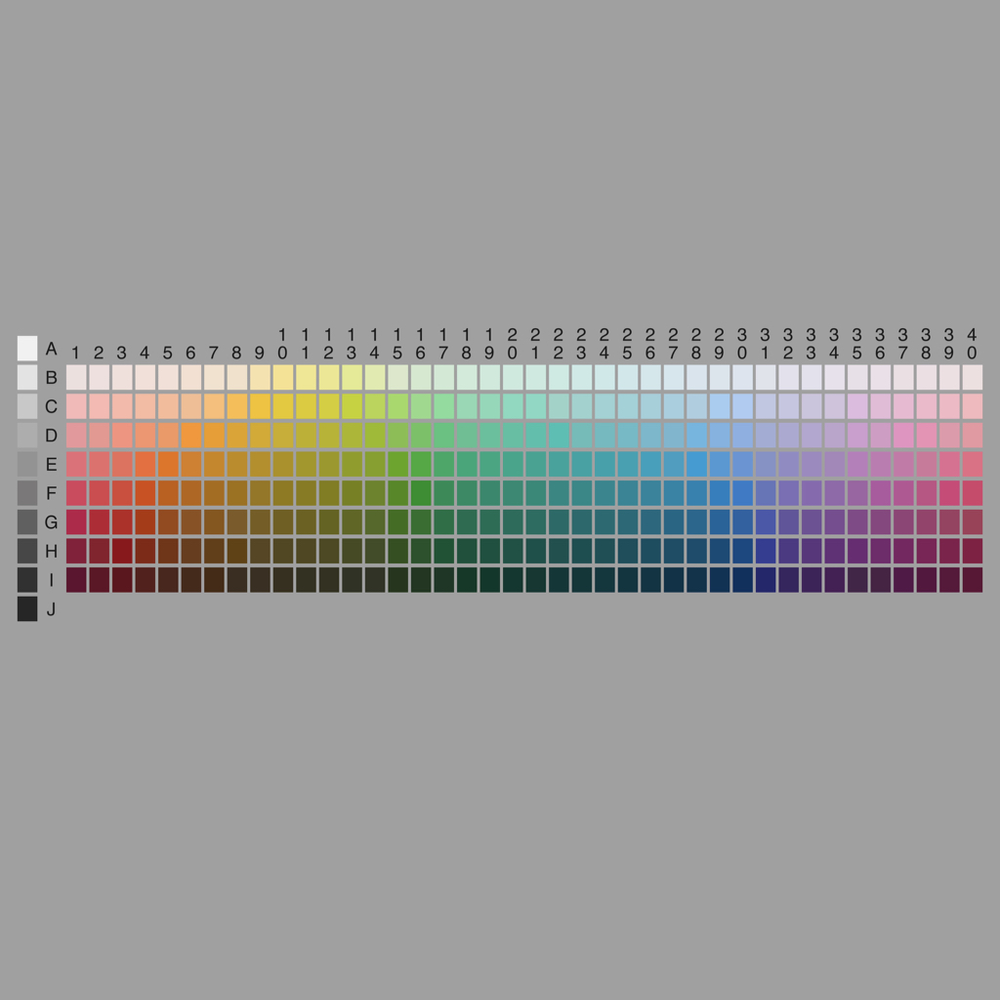
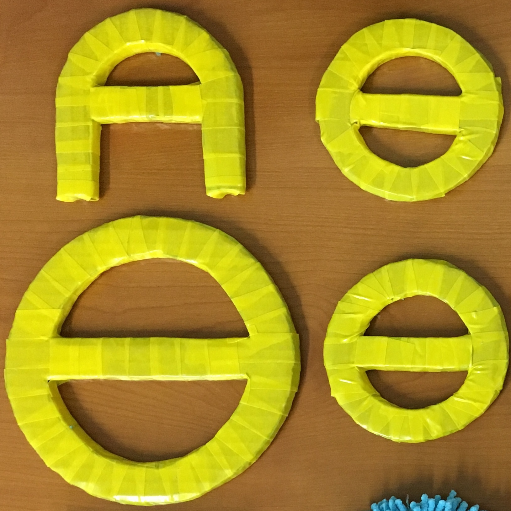
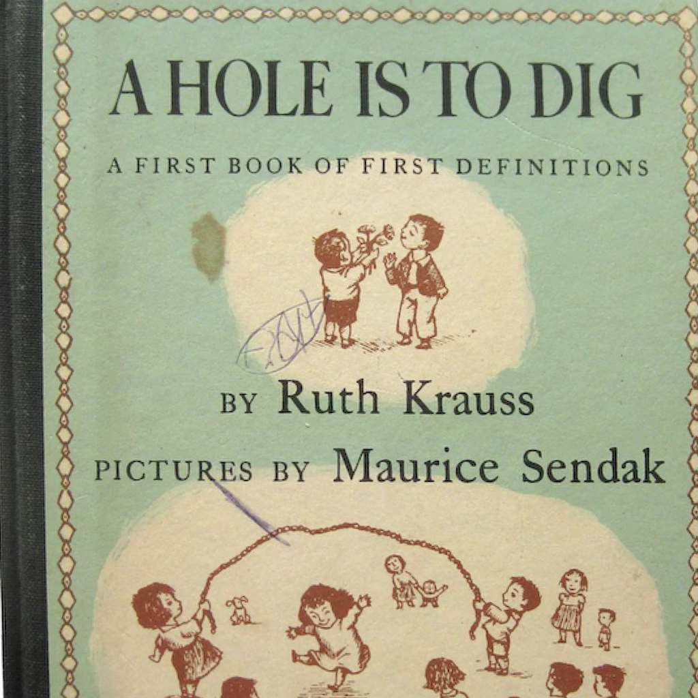

| Projects | |
| infant dnd
Roll for a child in a context. |
|
| lang dev final project
Replicate an experiment, analyze child language data, or design a conceptual game. |
|
| Homeworks & Handouts | |
| perusall assignments
Sample collaborative annotation assignments. |
|
| perceptual dialectology
Map-drawing task for region of small-group's choosing, with follow-up prompts inspired by Preston, D. |
linguistic self-portraits
Color-coded to reflect individuals' repertoires of languages, dialects, features...plus paired interview guide. |
| design features checklist
Students evaluate an expressive system of their choosing with respect to Hockett's Design Features. |
|
| alien language
Students evaluate an alien language with respect to properties of human languages. |
|
| |
universalism mini-quiz
Languages Nitwit and Blubber carve up the world of color differently. |
| Eve mini-lab
Students identify child language acquisition concepts in an excerpt from the Brown corpus. |
|
| child language mini-lab
Students infer (partial) word meanings and morphosyntactic errors in a sample of their choosing. |
|
| (family) language portraits
Template to collect family language histories and environments. |
|
| phillablez
Fillable templates for distilling empirical research, inspired by the Philz Coffee app. |
|
| dev intro survey
Introductory survey for Developmental Psychology classes online or in person. |
|
| |
daily check-in
Discussion groups assess and report on their level of certainty with course material. |
| exam question generation
Discussion groups generate questions to be considered for the exam. |
|
| additional resources
Curated links to linguistic, developmental resources for students. |
|
| |
infographic rubric
Rubric for grading infographic assignments (student example). |
| Activities & Demos | |
| aces game
Role-playing game teaches small groups about adverse childhood experiences and biological sensitivity to context. |
|
| building an empirical argument
Slides on how to identify your hypothesis and the literature you need to support it. |
|
| fast mapping
Simple in-class demonstration of fast mapping and novel word extension. |
|
|  | slow mapping
children infer the boundaries of adult color categories for diverse global languages. |
| human simulation paradigm
Demonstration of syntactic bootstrapping and the human simulation paradigm. |
|
| cross-situational word-learning
Short demonstration suitable for museums or mobile science outreach. |
|
| the box project
Short in-class demonstration of black box metaphor for cognitive science, adapted from Hardcastle & Slater (2014). |
|
| |
language & culture
Informal survey to solicit student intuitions about relation between language and cultural identity. |
|  | research toys
Word-learning and numberline "research toy" interpretation guides. |
| age of acquisition norms
AoA estimates according to archived M-CDIs (via Wordbank; accessed 2016), versus Kuperman et al. (2012). |
|
| Reading & Inspiration | |
| William Labov on Linguistics
How I Got Into Linguistics, and What I Got Out of It. |
|
| Toni Morrison on language
1993 Nobel Prize Acceptance Speech. |
|
| |
Story of Your Life, by Ted Chiang
Sci-fi linguistic relativity. |
| |
I CAN SPEAK, by George Saunders
What if babies could say what we wanted to hear, sooner. |
| Overture to dev psych, annotated
Kenneth Kaye (1982) on the first two years; 'baby labs' in The New Yorker |
|
| …"For" "Children" | |
| The Invisible Alphabet
Basically Why It's Hard to Label Our Concepts, illustrated. |
|
| |
Knuffle Bunny
The frustration of being pre-linguistic. |
| They All Saw a Cat
Perspective-taking and concepts. |
|
|  | A Hole is to Dig
Early semantics and teleological reasoning. |
| |
We are in a Book!
Existential explosion. |
| P is for Pterodactyl
English orthography is pteroble. |
|
| |
There
Deixis across time and space! |
| Runny Babbit
Spoonerisms. |
|